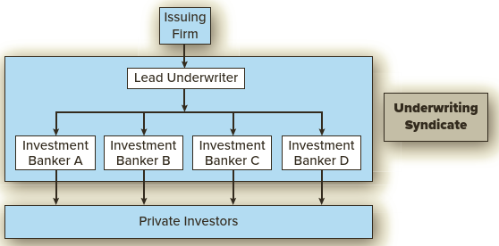
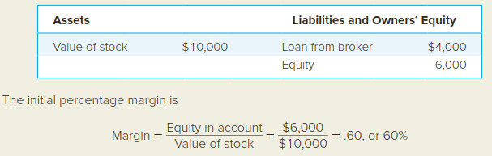
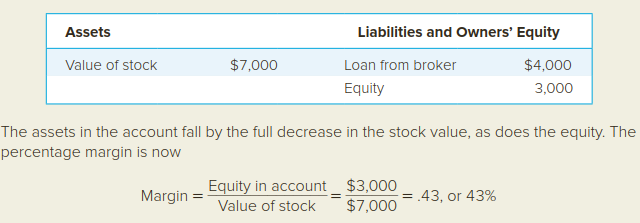
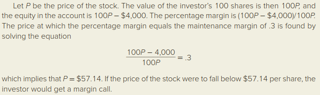

Pasar Modal
Tedy Herlambang / 2022-04-08
Capaian Pembelajaran
Setelah mempelajari dengan baik modul ini mahasiswa diharapkan mampu menjelaskan macam-macam pasar modal, bagaimana cara kerja, perkembangan dan kinerjanya. Secara khusus mahasiswa diharapkan mampu menjelaskan tentang:
- pasar modal
- pengertian dan proses pasar primer,
- pengertian dan proses pasar sekunder,
- perbedaan antara pasar OTC dan stock exchange,
- cara transaksi kas dan secara margin di pasar modal,
- pengertian dan proses short sale,
- pasar modal Indonesia dan strukturnya,
- fenomena underpricing di pasar modal Indonesia dan kinerjanya,
- macam-macam indeks di pasar modal Indonesia,
- IHSG sebagai pengukur kinerja pasar modal.
📚 KEGIATAN BELAJAR I
MACAM-MACAM PASAR MODAL
Transaksi di pasar modal lewat dua proses: pasar primer dan pasar sekunder
A. PASAR PRIMER
- Pasar pertama kali emiten1 menawarkan jumlah sahamnya atau menambah jumlah saham yang telah beredar di publik.
- Proses di pasar primer disebut penawaran publik
- Jika emiten menjual pertama kali disebut penawaran perdana publik (IPO)
- Emiten yang sudah menjual sahamnya di pasar modal disebut perusahaan publik.
- Emiten yang menambah saham yang sudah beredar disebut seasoned equity offering (SEO)
Diskusi: apa keuntungan perusahaan yang sudah go public?
B. BANKIR INVESTASI
- Emiten tidak dapat menjual sahamnya langsung ke investor, tetapi melalui bankir investasi sebagai perantaranya.
- Bankir investasi menjualkan saham emiten ke investor, disebut penjaminan emisi (underwriting).
- Bankir investasi disebut juga penjamin emisi (uderwriter).
- Bankir investasi juga bisa berperan sebagai konsultan untuk emiten.
- Bankir investasi melakukan penjaminan investasi melalui dua cara:
- metode komitmen penuh (full commitment): saham perusahaan yang akan dilepas semuanya dibeli dulu oleh bankir investasi.
- Risiko saham tidak laku ditanggung oleh bankir
- metode usaha terbaik (best effort): sahama dijualkan dengan usaha terbaik bankir.
- Risiko saham tidak laku ditanggung oleh emiten dan bankir mendapat komisi dari sahama yang terjual.
- Bankir dapat membentuk sindikat pada metode komitment penuh:
- menyebarkan risiko
- menyatukan kekuatan modal

C. PROSES PEMBELIAN SAHAM PERDANA
- Masyarakat/investor dapat membeli saham IPO dengan memesan (subscribe) ke bankir investasi.
- bisa juga melalui agen perusahaan sekuritas yang ditunjuk oleh bankir investasi.
- Investor memesan jumlah saham yang ingin dibeli.
- Mengapa harus memesan: IPO biasanya oversubscribe
- Contoh underwriters: PT BNI Securities, PT Mandiri Securities, PT Bahana Securities, dll…perhatikan kata securities dibelakang nama perusahaan!
- Investor tidak dapat menjual saham di pasar primer, tetapi di pasar sekunder.
- Investor dapat mengecek emiten melalui dokumen prospektusnya.
Diskusi: mengapa emiten harus IPO/SEO harus melalui underwriter?
D. PASAR SEKUNDER
- Sekuritas baru yang telah dijual di pasar primer dapat dijual oleh investor di pasar sekunder.
- Pasar sekunder dibagi 2: over the counter (OTC) dan Bursa efek.
- Lihat perbedaan OTC dengan Bursa efek di Tabel.
- Transaksi di OTC dilakukan dengan negosiasi antara dealer dengan investor.
- Dealer mendapat profit
- Transaksi di Bursa menggunakan cara lelang (auction) dengan perantara pialang (broker).
- Transaksi dilakukan secara terbuka dan harga ditentukan oleh S&D antar anggota pialang:
- ask price/offer price:
- bid price:
- satuan lot: 100 lembar saham atau kelipatannya.
E. REKENING MARGIN
Dua cara dalam membayar pembelian sekuritas
rekening kas: investor harus membayar penuh semua nilai pembeliannya sebelum atau saat jatuh tempo.
rekening margin: investor membayar sebagian saja, minimal 50%
Posisi sekuritas di rekening margin: panjang, flat atau short
- Posisi panjang: investor memiliki sekuritas positif
- posisi flat: semua sekuritas sudah terjual
- posisi short: karena penjualan pendek (short sales) yaitu investor menjual sekuritas yang belum dimiliki tetapi meminjam dari broker.
F. PENJUALAN MARGIN
- Dua persyaratan margin: margin awal dan margin pemeliharaan. jika gagal memenuhi margin pemiliharaan akan timbul margin pemberitahuan (margin call).
Rumus menghitung margin aktual
\[ Margin\,aktual = \frac {Nilai\,pasar\,sekuritas\,- Jumlah\, pinjaman}{Nilai\,pasar\,sekuritas} \]
- Penjualan Pendek
- Penjualan Pendek di mata investor
PERHATIKAN JUGA CONTOH 2.1, 2.2 DAN 2.3
Contoh Penghitungan: persentase margin adalah rasio antara nilai ekuitas (equity value) dengan nilai pasar (market value) sekuritas. Misalkan seorang investor mula-mula membayar 6,000 untuk pembelian saham senilai 10,000 (100 lembar saham dengan harga 100 per lembar), meminjam sisanya yaitu 4,000 dari pialang. Neraca mula-mula akan kelihatan seperti berikut:

Jika harga saham turun menjadi 70 per lembar, maka neraca akan seperti berikut:
 Jika margin pemeliharaan (maintenance margin) sebesar 30%, berapa harga saham terendah sebelum investor mendapat margin call?

📚 KEGIATAN BELAJAR 2
PASAR MODAL INDONESIA
A. PERKEMBANGAN PASAR MODAL INDONESIA
- Desember 1912 Bursa efek pertama di Indonesia dibentuk di Batavia oleh Pemerintah Belanda
- 10 Agustus 1977 Bursa efek dibuka kembali ditandai dengan go public PT Semen Cibinong sebagai emiten pertama
- 02 Maret 2009 Penggabungan BES dan BEJ menjadi BEI
B. STRUKTUR DAN PROSES PASAR MODAL INDONESIA
Proses perdagangan di pasar modal
- Proses perdagangan: investor membeli atau menjual saham diwakili oleh pialang
- Proses penyelesaian oleh PT KPEI (kliring dan penjaminan) dan PT KSEI (penyimpanan)
C. KINERJA PASAR MODAL
- Kinerja Pasar Primer
- Saham di pasar primer Indonesia murah (underpricing), return tinggi.
- Perhatikan rerata return, return maksimum, return minimum, standar deviasi return, return pembukaan, return penutupan.
- Kinerja Pasar Sekunder
- Menggunakan berbagai indeks, sekaligus mengukur perkembangan dari waktu ke waktu.
- Perhatikan berbagai indeks: IHSG, Indeks LQ-45, Indeks Sektoral, Indeks SRI-KEHATI, dll
emiten: perusahaan yang melakukan emisi/menjual saham.↩︎